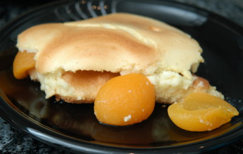

| Zutaten für 4 Personen: | |
| 1 Dose | Aprikosen |
| 3 EL | Mehl |
| 2 EL | Butter oder Margarine |
| 3 dl | Milch |
| 3 | Eier |
| 40 g | Zucker |
Ofen auf Mittelhitze (180°C) vorheizen.
Form nicht befetten. Saft von den Aprikosen abgiessen. Früchte in die Form geben.
Mehl in der Butter dämpfen; ablöschen; zu einer glatten Sauce verrühren. Pfanne vom Feuer nehmen. Auskühlen lassen.
Eier teilen, Eigelb mit dem Zucker unter die Sauce rühren. Eiweiss zu Schnee schlagen. Sorgfältig unter die Masse ziehen.
Soufflémasse über die Aprikosen verteilen. 50 - 60 Minuten backen. Sofort servieren.
Variante: Den Boden einer Auflaufform (3 l Inhalt) mit 100 g Löffelbiskuits belegen.
Aprikosen darüber verteilen.
Soufflémasse darüber geben.
So serviert, ergibt das Soufflé ein komplettes Nachtessen.
Herbert Eigenmann, Code: APS
Schmeckt warm ganz gut. RE 26.1.2009